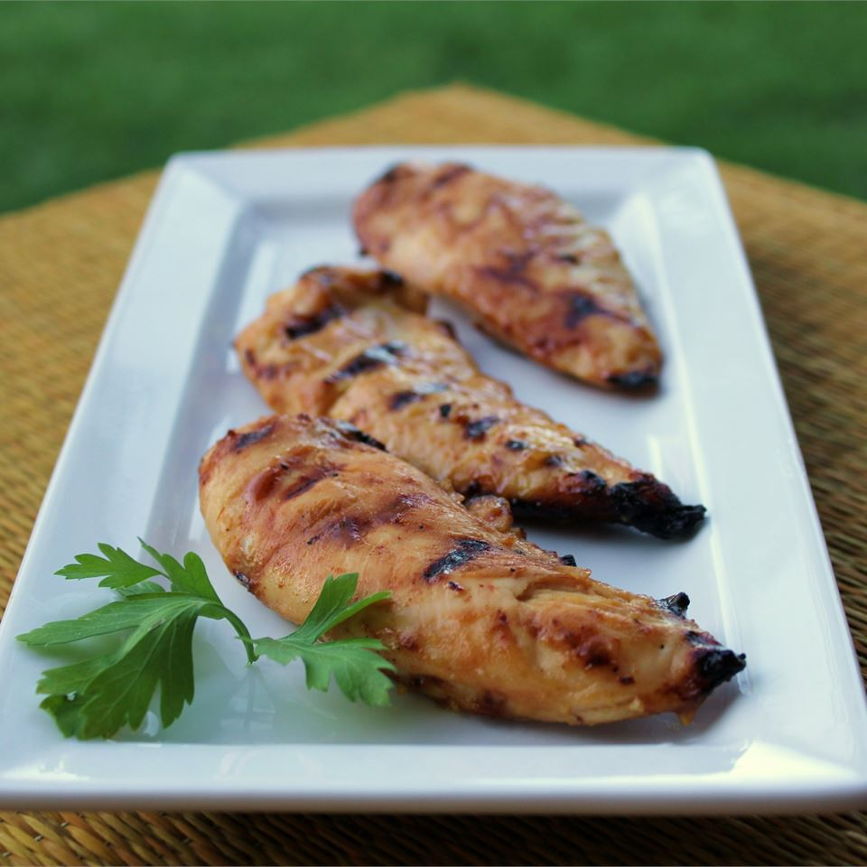

Honey Mustard Grilled Chicken

Description
This is a recipe for a delicious honey mustard grilled chicken that will feed a group of four. It is an easy recipe that anyone willing to try will believe they're a cook!
The total time it will take to make this meal is around 35 minutes. You will have roughly 15 minutes of prep, followed by an additional 20 minutes of actual cooking. This is a great healthy meal for the family that will provide a lot of protein!
Ingredients
- 1/3 cup Dijon mustard
- 1/4 cup honey
- 2 tablespoons mayonnaise
- 1 teaspoon steak sauce
- 4 skinless, boneless chicken breast halves
Steps
- Preheat the grill for medium heat
- In a shallow bowl, mix the mustard, honey, mayonnaise, and steak sauce. Set aside a small amount of the honey mustard sauce for basting, and dip the chicken into the remaining sauce to coat.
- Lightly oil the grill grate.
- Grill the chicken over indirect heat for 18 to 20 minutes, turning occasionally, or until the juices run clear. Baste occasionally with reserved sauce during the last 10 minutes. Watch carefully to prevent burning!